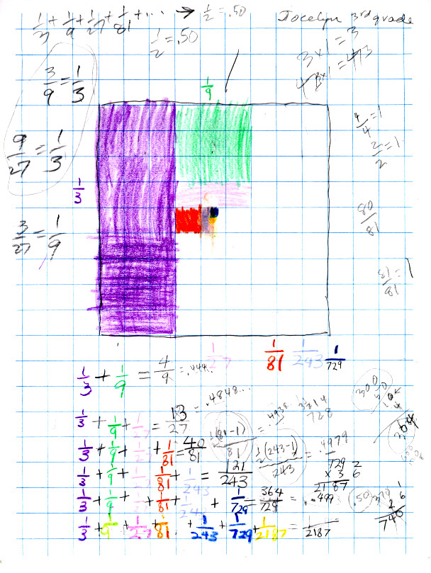

Jocelyn, a 3rd grader, sees patterns in an infinite series

Jocelyn saw that the denominators were multiplied by 3 each time to get the next one. She said if you subtract 1 from the denominator, then take 1/2 of that, you get the numerator! Don tried to get Jocelyn to write her idea for the partial sum for 1/3 + 1/9 + 1/81 as 1/2(81-1)/81. And as we add more fractions this fraction would go to 1/2 x 1 = 1/2. But Jocelyn wasn't getting that. So Don had Jocelyn change each partial sum to a decimal. She knew 1/2 = .50 (50 cents), so with a calculator she got 1/3 = .333..., 4/9 = .4444..., 13/27 = .4848..., 40/81= .4938... , 121/243 = .4979..., and 364/729 = .499... which is an infinite sequence. Don and Jocelyn talked about what was happening with these decimals and she said they were getting closer and closer to 1/2 = .50. In this process you can see Don had Jocelyn doing equivalent fractions, fractions equal to 1, and Jocelyn even took 1/2 of 728 and got 31/2 14 (3 1/2 hundreds, 1 ten and 4 ones which they converted to 364! That was neat.
Back to Patterns in Mathematics
Back to New Discoveries
To download
Don's materials
Mathman home